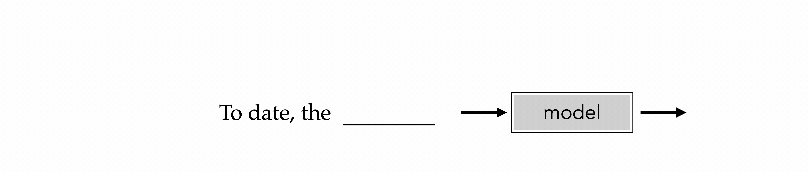
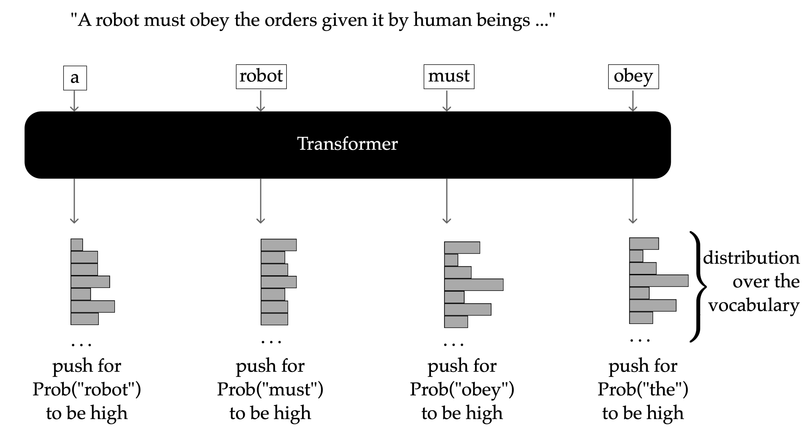

9 Transformatörler
Transformatörler, insan dilini işlemeye ve anlamaya yönelik bir yaklaşım olarak ilk olarak 2017 yılında doğal dil işleme (NLP) alanında tanıtılan çok yeni bir mimari ailesidir. O zamandan bu yana yalnızca NLP’te değil, aynı zamanda image işleme ve çok modlu üretken AI gibi diğer alanlarda da devrim yarattılar. Ölçeklenebilirlikleri ve paralelleştirilebilirlikleri, onları GPT, BERT ve Vision Transformers (ViT) gibi büyük ölçekli temel modellerin omurgası haline getirerek birçok state son teknoloji ürünü uygulamaya güç kazandırdı.
İnsan dili doğası gereği sıralıdır (örneğin, karakterler sözcükleri, sözcükler cümleleri ve cümleler paragrafları ve belgeleri oluşturur). Transformatör mimarisinin ortaya çıkmasından önce, tekrarlayan sinir ağları (RNNs), sıralı bilgileri işleme yetenekleri nedeniyle kısa süreliğine alana hakim oldu. Bununla birlikte, RNNs, diğer birçok mimari gibi sıralı bilgileri yinelemeli/sıralı bir biçimde işledi; bu sayede bir dizinin her bir öğesi birbiri ardına ayrı ayrı işlendi. Transformatörler, RNNs’e göre, tüm öğeleri bir parallel tarzında (CNNs’in yaptığı gibi) bir sırayla işleme yetenekleri de dahil olmak üzere birçok avantaj sunar.
CNNs gibi transformatörler de sinyal işlemeyi, her biri bağımsız ve aynı şekilde işlenmiş parçalar içeren aşamalara ayırır. Transformatörlerin birçok karmaşık bileşeni vardır; ancak biz onların en önemli yeniliğine odaklanacağız: attention layer adı verilen yeni bir layer türü. Attention katmanları, transformatörlerin bilgileri parçalar arasında etkili bir şekilde karıştırmasını sağlar ve tüm transformer boru hattının bu parçalar arasındaki model uzun menzilli bağımlılıklarına izin verir. Transformers’ı daha anlaşılır hale getirmeye yardımcı olmak için, bu bölümde öncelikle onları kısa ve öz bir şekilde motive edip genel bir bakışla açıklayacağız Bölüm 9.1. Ardından, veri akışını takip ederek ayrıntılara dalacağız - önce Bölüm 9.2 girişlerinin nasıl temsil edileceğini açıklayacağız ve ardından attention mekanizması Bölüm 9.3’i tanımlayacağız ve son olarak Bölüm 9.5’te tam transformer mimarisine ulaşmak için tüm bu fikirleri bir araya getireceğiz.
9.1 Transformers’a Genel Bakış
Transformatörler, öncelikle metin gibi sıralı veriler için tasarlanmış güçlü sinir mimarileridir. Transformatörler özünde tipik olarak otomatik gerilemelidir; yani her bir token’i önceden oluşturulmuş belirteçlere göre sıralı olarak tahmin ederek diziler üretirler. Bu otomatik gerileme özelliği, transformer model’in doğası gereği zamansal bağımlılıkları yakalamasını sağlayarak, onları özellikle metin oluşturma ve tamamlama gibi dil modelleme görevleri için uygun hale getirir.
training data’imizin şu cümleyi içerdiğini varsayalım: “Bugüne kadar en zeki düşünür Isaac’ti.” transformer model, önceki belirteçler göz önüne alındığında sıradaki bir sonraki token’i tahmin etmeyi öğrenecektir. Örneğin, token “en akıllı”yı tahmin ederken, model tahminini “Kime”, “tarih” ve “the” belirteçlerine göre koşullandıracaktır. Bu işlem dizinin tamamı oluşturulana kadar devam eder.

Yukarıdaki animasyon transformatörlerin otomatik gerileyen doğasını göstermektedir.
Aşağıda başka bir örnek var. Cümlenin robotiğin 2. yasası olduğunu varsayalım: “Bir robot, insanlar tarafından verilen emirlere uymalıdır…” Bir transformer’in eğitim hedefi, her bir token’in tahminini yapmak, önceden oluşturulmuş belirteçleri koşullandırmak, vocabulary üzerinde adım adım bir olasılık dağılımı oluşturmak olacaktır.

transformer mimarisi, katmanlar halinde yığılmış birden fazla aynı yapı bloğunu uygulayarak girdileri işler. Her blok, verilerin dahili temsilini aşamalı olarak iyileştiren bir dönüşüm gerçekleştirir.
Spesifik olarak, her blok iki ana alt katmandan oluşur: bir attention layer Bölüm 9.4 ve bir feed-forward network (veya multi-layer perceptron) Bölüm 6. Attention katmanları, sırayla farklı konumlardaki (veya “parçalar”) bilgileri karıştırır ve model’in mesafeden bağımsız olarak bağımlılıkları etkili bir şekilde yakalamasına olanak tanır. Bu arada feed-forward network, her konuma bağımsız olarak doğrusal olmayan dönüşümler uygulayarak bu temsillerin anlamlılığını önemli ölçüde artırır.
Transformatörlerin dikkate değer bir gücü, paralel işleme kapasiteleridir. Transformatörler, sıralı olarak token-by-token yerine tüm dizileri eşzamanlı olarak işler. Bu paralelleştirme, hesaplama verimliliğini önemli ölçüde artırır ve daha büyük ve daha derin modellerin eğitilmesini mümkün kılar.
Bu genel bakışta, transformatörlerin otomatik gerilemeli doğasını, gösterimleri dönüştürmeye yönelik katmanlı yaklaşımlarını, paralel işleme avantajını ve ileri besleme katmanlarının ifade güçlerini arttırmadaki kritik rolünü vurguluyoruz.
Transformatörleri daha da güçlendiren nedensel attention mekanizmaları ve positional encoding gibi ek temel bileşenler ve geliştirmeler vardır. Sonraki tartışmalarda bu “çanlar ve ıslıkları” daha derinlemesine inceleyeceğiz.
9.2 Embedding ve Temsilcilikler
Dilin yaygın olarak nasıl temsil edildiğini açıklayarak başlıyoruz, ardından bir sırayla sonraki öğeleri (örneğin, kelimeler/belirteçler) tahmin etmenin neden yararlı olabileceğine dair kısa bir açıklama sunuyoruz.
Bir hatırlatma olarak, herhangi bir ML sisteminin iki key bileşeni şunlardır: (1) verilerin temsili; ve (2) istenen bazı görevleri gerçekleştirmek için gerçek modelleme. Bilgisayarların varsayılan olarak insan dilini temsil etmenin doğal bir yolu yoktur. Modern bilgisayarlar Von Neumann mimarisine dayanmaktadır ve herhangi bir karakter dizisinin biz insanlar için ne anlama geldiğine dair doğal bir anlayışa sahip olmayan, esasen çok güçlü hesap makineleridir. Dilin zengin karmaşıklıkları göz önüne alındığında (örneğin mizah, alaycılık, sosyal ve kültürel referanslar ve imalar, argo, eş anlamlılar, vb.), bilgisayarların model ve dili “anlama” konusundaki zorluklarının yanı sıra, dilleri uygun şekilde temsil etmenin doğuştan gelen zorluklarını da hayal edebilirsiniz.
NLP alanı, sözcükleri kayan nokta sayılarının vektörleriyle (aka sözcük yerleştirmeleri) anlamsal anlamı yakalayacak şekilde temsil etmeyi amaçlamaktadır. Daha doğrusu, herhangi iki kelimenin ‘gerçek dünya’da biz insanlarla ne kadar ilişkili olduğu, onlara karşılık gelen vektörler (sayısal değerleri açısından) tarafından yansıtılmalıdır. Dolayısıyla ’köpek’ ve ‘kedi’ gibi kelimeler, örneğin ‘kedi’ ve ’masa’ya göre birbirine daha çok benzeyen vektörlerle temsil edilmelidir.
Herhangi iki kelime yerleştirmesinin (sayısal değerleri açısından) ne kadar benzer olduğunu ölçmek için metrik olarak bazı benzerliklerin kullanılması yaygındır; Bölüm 8’te gördüğümüz nokta çarpım benzerliği.
Böylece, her word embedding’in \(d\) boyutlu uzayda çizilmesi ve doğal kümelerin oluşmasının gözlemlenmesi, böylece benzer kelimelerin (örneğin, eşanlamlıların) birbirine yakın konumlandırılması hayal edilebilir. Tek tek kelimelerin nasıl ayrıştırılacağını (başka bir deyişle tokenleştirileceğini) belirleme sorunu, tokenization olarak bilinir. Bu başlı başına bir konudur, dolayısıyla burada tüm ayrıntılara dalmayacağız. Bununla birlikte, üst düzey tokenizasyon fikri basittir: model tarafından temsil edilen ve işlenen bireysel veri girişlerine token adı verilir. Ve her bir kelimeyi bir bütün olarak işlemek yerine, kelimeler genellikle split daha küçük, anlamlı parçalara (hecelere benzer) bölünür. Örneğin, “değerlendirme” sözcüğü input olabilir ve bir model’e 3 ayrı token (değerlendirme + değerlendirme + tion) olarak dönüştürülebilir. Dolayısıyla tokenlardan bahsettiğimizde bu alt kelime birimlerinden bahsettiğimizi bilin. Herhangi bir uygulama/model için, tüm dil verilerinin, geçerli belirteçlerden oluşan sınırlı bir vocabulary (genellikle 40.000 farklı belirteç düzeyinde) tarafından önceden tanımlanması gerekir.
Bu tür tokenlerin optimal vocabulary’ini nasıl tanımlayabiliriz? vocabulary’imizde kaç farklı tokena sahip olmalıyız? Rakamları veya diğer noktalama işaretlerini nasıl ele almalıyız? Bu, İngilizce dışındaki diller için, özellikle de sözcük sınırlarının daha az belirgin olduğu alfabe tabanlı diller için (örneğin, Çince veya Japonca) nasıl çalışır? Bunların tümü, son zamanlarda artan attention alan açık NLP araştırma problemleridir.
9.3 Query, Key, Value ve Attention Output
Attention mekanizmaları, input’in en ilgili kısımlarına seçici bir şekilde odaklanarak küresel bilgileri verimli bir şekilde işler. Bir input cümlesi verildiğinde, her bir token sonraki belirteçleri tahmin etmek için sırayla işlenir. Daha fazla içerik (önceki belirteçler) biriktikçe, bu bağlam ideal olarak giderek daha faydalı hale gelir; tabii model’in onu uygun şekilde kullanabilmesi şartıyla. Transformatörler, attention olarak bilinen ve modellerin bağlamsal olarak ilgili belirteçleri tanımlamasına ve önceliklendirmesine olanak tanıyan bir mekanizma kullanır.
Örneğin şu kısmi cümleyi düşünün: “Anqi ___’i unuttu”. Bu noktada model, “Anqi” ve “unuttum” tokenlerini işledi ve bir sonraki token’i tahmin etmeyi hedefliyor. Makaleler (“the”, “an”), edatlar (“to”, “about”) veya iyelik zamirleri (“her”, “onun”, “onların”) gibi çok sayıda geçerli tamamlama mevcuttur. İyi eğitilmiş bir model, dişil ilişkili “Anqi” ismine dayalı olarak “her” gibi bağlamsal olarak alakalı belirteçlere daha yüksek olasılıklar atamalıdır. Attention mekanizmaları, query, key ve value vektörlerini kullanarak bu ilgili bağlamsal ipuçlarına seçici bir şekilde odaklanmak için model’e rehberlik eder.
9.3.1 Query Vektörleri
Amacımız, her input token için, sıradaki diğer token’lere ne kadar attention vermesi gerektiğini öğrenmektir. Bunu başarmak için her token’e, alaka düzeyini belirlemek amacıyla kendisi de dahil olmak üzere diğer belirteçleri “araştırmak” veya değerlendirmek için kullanılan benzersiz bir query vector atanır.
Bir token’in query vector \(q_i\)’i, input token \(x_i\)’in (bir \(d\) boyutlu vector) öğrenilebilir bir değerle çarpılmasıyla hesaplanır. query weight matrix \(W_q\) (\(d \times d_k\) boyutunda, \(d_k\), tipik olarak \(d_k < d\) olacak şekilde seçilen bir hyperparameter’tir):
\[ q_i = W_q^T x_i \]
Böylece, bir \(n\) token dizisi için \(n\)’e özgü query vektörleri üretiyoruz.
9.3.2 Key Vektörleri
query vektörlerini tamamlamak için, belirteçlerin alaka düzeyine ilişkin sorguları “cevaplamak” için kullandığı key vektörlerini’i tanıtıyoruz. Spesifik olarak, token \(x_3\) değerlendirilirken, query vector \(q_3\), her bir token’in key vector \(k_j\)’i ile karşılaştırılır. attention weight. Her key vector \(k_i\), öğrenilebilir bir key weight matrix \(W_k\) kullanılarak benzer şekilde hesaplanır:
\[ k_i = W_k^T x_i \]
attention mekanizması, vector benzerliğini verimli bir şekilde ölçen dot product’i kullanarak benzerliği hesaplar:
\[ a_i = \text{softmax}\left(\frac{[q_i^T k_1, q_i^T k_2, \dots, q_i^T k_n]}{\sqrt{d_k}}\right) \in \mathbb{R}^{1\times n} \]
vector \(a_i\) (softmax’d attention puanları), attention token \(q_i\)’in dizideki her bir token’e ne kadar ödeme yapması gerektiğini belirler ve öğelerin toplamı 1 olacak şekilde normalleştirilir. \(\sqrt{d_k}\) büyük nokta çarpım büyüklüklerini önleyerek eğitimi dengeler.
9.3.3 Value Vektörleri
Katılan belirteçlerden anlamlı katkıları dahil etmek için, attention çıktılarına katkı için farklı temsiller sağlayan value vektörlerini (\(v_i\)) kullanıyoruz. Her token’in value vector’i başka bir öğrenilebilir matrix \(W_v\) ile hesaplanır:
\[ v_i = W_v^T x_i \]
9.3.4 Attention Output
Son olarak, attention çıktıları, softmax’d attention puanları kullanılarak value vektörlerinin ağırlıklı toplamları olarak hesaplanır:
\[ z_i = \sum_{j=1}^n a_{ij} v_j \in \mathbb{R}^{d_k} \]
Bu vector \(z_i\), token \(x_i\)’in zenginleştirilmiş embedding’ini temsil eder, dizi boyunca bağlamı birleştirir ve öğrenilen attention ile ağırlıklandırılır.
9.4 Self-attention Layer
Self-attention, anahtarların, değerlerin ve sorguların tamamının aynı input’ten oluşturulduğu bir attention mekanizmasıdır.
Çok yüksek bir düzeyde, self-attention katmanlarına sahip tipik bir transformer, \(\mathbb{R}^{n\times d} \longrightarrow \mathbb{R}^{n\times d}\)’i eşler. Özellikle, transformer, her biri feature \(d,\) boyutuna sahip olan ve birçok dönüşüm katmanı (bunlardan en önemlisi self-attention katmanlarıdır) yoluyla \(n\) belirteçlerini alır; transformer, sonunda her biri \(d\) boyutlu hareketsiz olan bir dizi \(n\) belirteci çıktısı verir.
Bir self-attention layer ile birden fazla attention kafası bulunabilir. Tek bir kafayı anlamakla başlıyoruz.
9.4.1 A Tekli Self-attention Kafası
Tek bir self-attention kafası, Bölüm 9.3’teki tartışmamızla büyük ölçüde aynıdır. Bu bölümde tanıtılan ana ek bilgi, kompakt bir matrix formudur. layer, her biri feature \(d\) boyutuna sahip olan \(n\) tokenlerini alır. Böylece, tüm belirteçler toplu olarak \(X\in \mathbb{R}^{n\times d}\) olarak yazılabilir; burada \(X\)’in \(i\)’inci satırı, \(x_i\in\mathbb{R}^{1\times d}\) olarak gösterilen \(i\)-th token’i saklar. Her token \(x_i\) için self-attention, (Bölüm 9.3’te tartışılan öğrenilmiş projeksiyon matrisleri aracılığıyla) bir query \(q_i \in \mathbb{R}^{d_q}\), key \(k_{i} \in \mathbb{R}^{d_k}\) ve value \(v_{i} \in \mathbb{R}^{d_v}\) ve genel olarak \(n\) sorgularına, \(n\) anahtarlarına ve \(n\) değerlerine sahip olacağız; bu vektörlerin tümü pratikte aynı boyutta yaşar ve genellikle üç embedding boyutunun tamamını birleşik bir \(d_k\) aracılığıyla belirtiriz.
self-attention output ağırlıklı toplam olarak hesaplanır:
\[ {z}_i = \sum_{j=1}^n a_{ij} v_{j}\in\mathbb{R}^{d_k } \]
burada \(a_{ij}\), \(a_i\)’teki \(j\)’inci öğedir.
Şu ana kadar tek bir token input-output’e odaklanarak self-attention’i tartıştık. Aslında matrix formunu kullanarak tüm \(z_i\) (\(i=1,2,\ldots,n\)) çıkışlarını aynı anda hesaplayabiliriz. Anlaşılır olması açısından, öncelikle \(Q\in\mathbb{R}^{n\times d_k}\) query matrix, \(K\in\mathbb{R}^{n\times d_k}\) key matrix ve \(V\in\mathbb{R}^{n\times d_k}\) value matrix’i tanıtıyoruz:
\[ \begin{aligned} Q &= \begin{bmatrix} q_1^\top \\ q_2^\top \\ \vdots \\ q_n^\top \end{bmatrix} \in \mathbb{R}^{n \times d_k}, \quad K = \begin{bmatrix} k_1^\top \\ k_2^\top \\ \vdots \\ k_n^\top \end{bmatrix} \in \mathbb{R}^{n \times d_k}, \quad V = \begin{bmatrix} v_1^\top \\ v_2^\top \\ \vdots \\ v_n^\top \end{bmatrix} \in \mathbb{R}^{n \times d_k} \end{aligned} \]
\(Q\), \(K\), \(V\) matrislerinin sırasıyla \(q_i\), \(k_i\) ve \(v_i\)’i satır bazında istiflediğini anlamak kolay olmalıdır. Şimdi tam attention matrix \(A \in \mathbb{R}^{n \times n}\) şu şekildedir:
\[\begin{aligned} A = \begin{bmatrix} \text{softmax}\left( \begin{bmatrix} q_1^\top k_1 & q_1^\top k_2 & \cdots & q_1^\top k_{n} \end{bmatrix} / \sqrt{d_k} \right) \\ \text{softmax}\left( \begin{bmatrix} q_2^\top k_1 & q_2^\top k_2 & \cdots & q_2^\top k_{n} \end{bmatrix} / \sqrt{d_k} \right) \\ \vdots & \\ \text{softmax}\left( \begin{bmatrix} q_{n}^\top k_1 & q_{n}^\top k_2 & \cdots & q_{n}^\top k_{n} \end{bmatrix} / \sqrt{d_k} \right) \end{bmatrix} \end{aligned} \tag{9.1}\]
genellikle daha kısa ve öz olarak şu şekilde yazılır: \[\begin{aligned} A = \text{softmax}\left( \frac{1}{\sqrt{d_k}} \begin{bmatrix} q_1^\top k_1 & q_1^\top k_2 & \cdots & q_1^\top k_n \\ q_2^\top k_1 & q_2^\top k_2 & \cdots & q_2^\top k_n \\ \vdots & \vdots & \ddots & \vdots \\ q_n^\top k_1 & q_n^\top k_2 & \cdots & q_n^\top k_n \end{bmatrix} \right)\end{aligned}=\text{softmax}\left(\frac{QK^\top}{\sqrt{d_k}}\right) \]
Softmax işleminin satır bazında uygulandığını unutmayın. \(A\)’in \(i\)’inci satırı, tüm anahtarlar (yani \(\alpha_i\)) üzerinden query \(q_i\) için hesaplanan softmax’d attention puanlarına karşılık gelir. attention-kafa output daha sonra kompakt bir şekilde şu şekilde yazılabilir:
\[ Z = \begin{bmatrix} z_1^\top \\ z_2^\top \\ \vdots \\ z_n^\top \end{bmatrix} = AV \in \mathbb{R}^{n \times d_k} \]
burada \(V\in \mathbb{R}^{n \times d_k}\), satır bazında yığılmış value vektörlerinin matrix’idir ve \(Z \in \mathbb{R}^{n \times d_k}\), \(i\)’inci satırı attention output’e karşılık gelen output’tir. \(i\)th query (yani \(z_i\)).
Ayrıca literatürde \(Q\), \(K\) ve \(V\) bağımsız değişkenlerinin bir işlemi olan bu kompakt Attention gösterimini de göreceksiniz (ve softmax’in her satırda gerçekleştirildiğini vurguluyoruz):
\[ \text{Attention}(Q, K, V) = \text{softmax}_{row}\left(\frac{Q K^\top}{\sqrt{d_k}}\right)V \]
9.4.2 Çok kafalı Self-attention
İnsan dili çok incelikli olabilir. Bir insanın herhangi bir cümleyi anlamasına kolektif olarak katkıda bulunan dilin birçok özelliği vardır. Örneğin, kelimelerin farklı zamanları (geçmiş, şimdiki zaman, gelecek vb.), cinsiyetleri, kısaltmaları, argo referansları, ima edilen kelimeler veya anlamları, kültürel referansları, durumsal alakaları vb. vardır. attention mekanizması, input cümlesindeki belirteçlere uygun şekilde odaklanmamıza izin verirken, tek bir \(\{Q,K,V\}\) kümesi beklemek mantıksızdır. Bir cümlenin anlamını tüm karmaşıklığıyla birlikte tam olarak temsil edecek ve model’in yakalayacağı matrisler.
Bu sınırlamayı gidermek için multi-head attention fikri ortaya atıldı. Yalnızca bir attention kafasına (yani tek bir \(\{Q, K, V\}\) matris seti) güvenmek yerine, model, her biri kendi bağımsız olarak öğrenilen \(\{Q, K, V\}\) matris setine sahip birden fazla attention kafası kullanır. Bu, her bir kafanın input tokenlerinin farklı bölümlerine ve model farklı türdeki anlamsal ilişkilere katılmasına olanak tanır. Örneğin, bir kafa sözdizimsel yapıya, diğeri ise fiilin zamanına veya duyguya odaklanabilir. Bu farklı “perspektifler” daha sonra birleştirilir ve input’in daha zengin, daha etkileyici bir temsilini üretecek şekilde yansıtılır.
Şimdi resmi matematik notasyonlarını tanıtıyoruz. Kafa sayısını \(H\) olarak gösterelim. \(h\)th kafa için, input \(X \in \mathbb{R}^{n \times d}\), \(W_q^{h}\in\mathbb{R}^{d\times d_k}\), \(W_k^{h}\in\mathbb{R}^{d\times d_k}\) projeksiyon matrisleri kullanılarak query, key ve value matrislerine doğrusal olarak yansıtılır ve \(W_v^{h}\in\mathbb{R}^{d\times d_k}\):
\[ \begin{aligned} Q^{h} &= X W_q^{h} \\ K^{h} &= X W_k^{h} \\ V^{h} &= X W_v^{h} \end{aligned} \]
\(h\)-th başlığının output’i \(Z^{h}\): \({Z}^h = \text{Attention}(Q^{h}, K^{h}, V^{h})\in\mathbb{R}^{n\times d_k}\)’tir. Tüm \(H\) kafalarını hesapladıktan sonra çıktılarını birleştiriyor ve son bir doğrusal projeksiyon uyguluyoruz: \[ \text{MultiHead}(X) = \text{Concat}(Z^1, \dots, Z^H) W^O \] burada birleştirme işlemi \(Z^h\)’i yatay olarak birleştirerek \(n\times Hd_k\) boyutunda bir matrix verir ve \(W^O \in \mathbb{R}^{Hd_k \times d}\), matrix’in son doğrusal projeksiyonudur.
9.5 Transformers Mimari Ayrıntıları
9.5.1 Konumsal Gömmeler
Son derece dikkatli bir okuyucu, henüz tartışmadığımız küçük ama çok önemli bir ayrıntıdan şüphelenmiş olabilir: attention mekanizması, şu ana kadar tanıtıldığı şekliyle, input tokenlarının sırasını kodlamaz. Örneğin, softmax’d attention puanlarını hesaplarken ve token temsillerini oluştururken, model temelde permütasyona eşdeğerdir - aynı jeton seti, farklı bir sıraya karıştırılsa bile, aynı çıktıların aynı sırayla permütasyonuna neden olur — Resmi olarak, \(\{W_q,W_k,W_v\}\)’i düzelttiğimizde ve input \(x_i\)’i \(x_j\) ile değiştirin, ardından output \(z_i\) ve \(z_j\) değiştirilecektir. Ancak doğal dil bir kelime torbası değildir: anlam, kelime sırasına sıkı sıkıya bağlıdır.
Bu sorunu çözmek için transformatörler, dizideki her bir token’in konumunu kodlayan ek bilgiler olan konumsal yerleştirmeleri içerir. Bu yerleştirmeler, herhangi bir attention katmanı uygulanmadan önce input token yerleştirmelerine eklenir ve sipariş bilgileri etkili bir şekilde model’e enjekte edilir.
Konumsal yerleştirmeler için iki ana strateji vardır: (i) öğrenilmiş konumsal yerleştirmeler; burada eğitilebilir bir vector \(p_i\in\mathbb{R}^d\) her pozisyona atanır (yani, token dizini) \(i=0, 1, 2, ..., n\). Bu vektörler, diğer tüm model parametreleriyle birlikte öğrenilir ve model’in belirli bir görev için konumu en iyi nasıl kodlayacağını keşfetmesine olanak tanır, (ii) orijinal Transformer makalesinde önerilen sinüzoidal konumsal embedding gibi sabit konumsal yerleştirmeler:
\[ \begin{aligned} p_{(i, 2k)} = \sin\left( \frac{i}{10000^{2k/d}} \right) \\ p_{(i, 2k+1)} = \cos\left( \frac{i}{10000^{2k/d}} \right) \end{aligned} \]
\(i=1,2,..,n\), token dizini, \(k=1,2,...,d\) ise boyut dizini. Yani, bu sinüzoidal konumsal embedding, çift boyut için sinüs ve tek boyut için kosinüs kullanır. Öğrenilebilir veya sabit konumsal embedding’ten bağımsız olarak, attention hesaplamasına input konumunda girecektir: \(x_i^*=x_i+p_i~,\); burada \(x_i\), \(i\)’inci orijinal input token’tir ve \(p_i\), konumsal embedding’tir. \(x_i^*\) artık attention layer’e gerçekten beslediğimiz şey olacak, böylece input’ten attention mekanizmasına giden yol artık hem token’in ne olduğu hem de dizide nerede göründüğü hakkında bilgi taşıyor.
Bu basit eklemeli tasarım, attention katmanlarının nereye odaklanılacağına karar verirken hem anlamsal içerikten hem de sıralama yapısından yararlanmasını sağlar. Uygulamada bu ekleme, transformer yığınının ilk layer’inde gerçekleşir ve sonraki tüm katmanlar, konuma duyarlı gösterimler üzerinde çalışır. Bu, transformatörlerin metin, ses ve hatta image yamaları (Vision Transformers’ta olduğu gibi) dizileriyle etkili bir şekilde çalışmasına olanak tanıyan bir key tasarım seçeneğidir.
9.5.2 Nedensel Self-attention
Daha genel olarak, attention hesaplamasında hangi belirteçlerin kullanıldığını sınırlamak için bir mask uygulanabilir. Örneğin, ortak bir maske, attention hesaplamasını, query için kullanılan belirteçlerle aynı zamanda daha önce ortaya çıkan belirteçlerle sınırlar. Bu, transformer’in aynı anda bir token oluşturmak için kullanıldığı senaryolarda attention mekanizmasının “ileriye bakmasını” engeller. Bu nedensel maskeleme, attention’i yalnızca mevcut ve önceki konumlarla sınırlayan bir matrix \(M \in \mathbb{R}^{n \times n}\) maskesinin tanıtılmasıyla yapılır. Tipik bir causal mask, daha düşük üçgen bir matrix’tir:
\[ M = \begin{bmatrix} 0 & -\infty & -\infty & \cdots & -\infty \\ 0 & 0 & -\infty & \cdots & -\infty \\ 0 & 0 & 0 & \cdots & -\infty \\ \vdots & \vdots & \vdots & \ddots & \vdots \\ 0 & 0 & 0 & \cdots & 0 \end{bmatrix} \]
ve artık maskeli attention matrix’e sahibiz:
\[\begin{aligned} A = \text{softmax}\left( \frac{1}{\sqrt{d_k}} \begin{bmatrix} q_1^\top k_1 & q_1^\top k_2 & \cdots & q_1^\top k_n \\ q_2^\top k_1 & q_2^\top k_2 & \cdots & q_2^\top k_n \\ \vdots ve \vdots ve \ddots ve \vdots \\ q_n^\top k_1 & q_n^\top k_2 & \cdots & q_n^\top k_n \end{bmatrix} + M \right)\end{aligned}\]softmax her satırda bağımsız olarak gerçekleştirilir. attention output hala \(Y= A V\)’tir. Temel olarak, \(M\)’in alt üçgen özelliği, \(j\)-th query için self-attention işleminin yalnızca \(0,1,...,j\) belirteçlerini dikkate almasını sağlar. softmax’i gerçekleştirmeden önce maskelemeyi uygulamamız gerektiğini unutmayın; böylece attention matrix düzgün bir şekilde normalleştirilebilir (yani her satırın toplamı 1’e eşit olur).
Her self-attention aşaması, input’in belirli bir feature’ine belirli attention ödemesine yol açan key, value ve query yerleştirmelerine sahip olacak şekilde eğitilmiştir. Genellikle attention’i input’teki birçok farklı özellik türüne ödemek istiyoruz; örneğin çeviride bir feature fiiller, diğeri ise nesneler veya özneler olabilir. Bir transformer, birçok farklı özelliğe ödenen attention kombinasyonlarına izin vermek için her biri “attention kafası” olarak bilinen birden fazla self-attention örneğini kullanır.